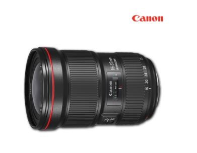
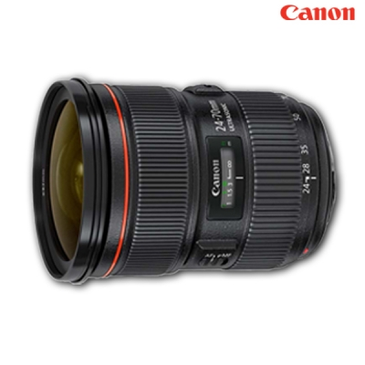
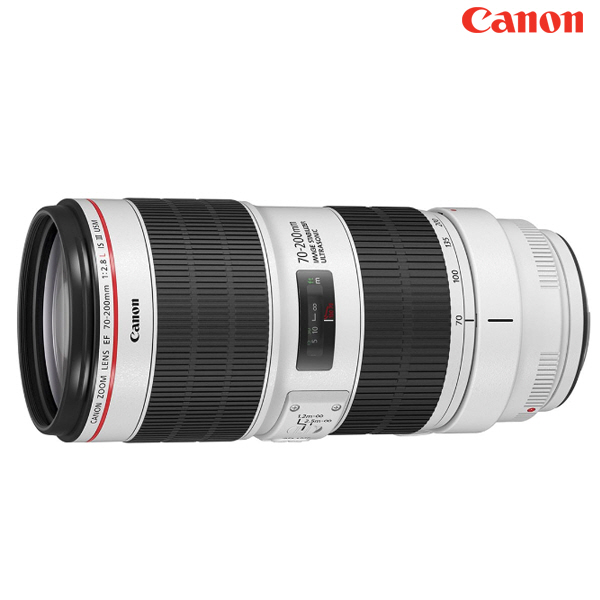

압도적인 화질로 재탄생한 EF 16-35mm L렌즈의 3번째 리뉴얼
상세 스펙
풀프레임DSLR용 / 광각줌렌즈 / 캐논EF / L렌즈(최상급) / 11군 / 16매 / 밝기:F2.8 / 최단촬영거리:28cm / 필터구경:82mm / 방진방적 / 초음파모터 / 원형조리개 / 비구면 / 저분산 / 풍경용렌즈 / 무게:790g / SWC&ASC기술채용 / 후드포함 / 불소코팅

캐논 EF 24-70mm F2.8L II USM
고화질, 소형화 슈퍼UD렌즈 탑재한 방진방적 L렌즈
상세 스펙
풀프레임DSLR용 / 표준줌렌즈 / 캐논EF / L렌즈(최상급) / 13군 / 18매 / 밝기:F2.8 / 최단촬영거리:38cm / 필터구경:82mm / 고정조리개 / 방진방적 / 초음파모터 / FTM / 원형조리개 / 비구면 / 저분산 / 인물용렌즈 / 무게:805g / 애칭:신계륵

캐논 EF 70-200mm F2.8L IS III USM
새로운 반사 방지 코팅 에어 스피어로 플레어와 고스트를 저감!
상세 스펙
풀프레임DSLR용 / 망원줌렌즈 / 캐논EF / L렌즈(최상급) / 19군 / 23매 / 밝기:F2.8 / 최단촬영거리:120cm / 필터구경:77mm / 고정조리개 / 손떨림방지 / 방진방적 / 초음파모터 / FTM / 원형조리개 / 저분산 / 이너줌 / 이너포커스 / 여행용렌즈 / 무게:1480g / 불소코팅 / 에어 스피어 코팅(ASC) / 애칭:새새아빠백통